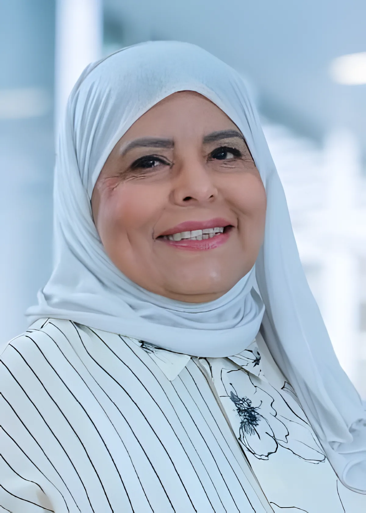
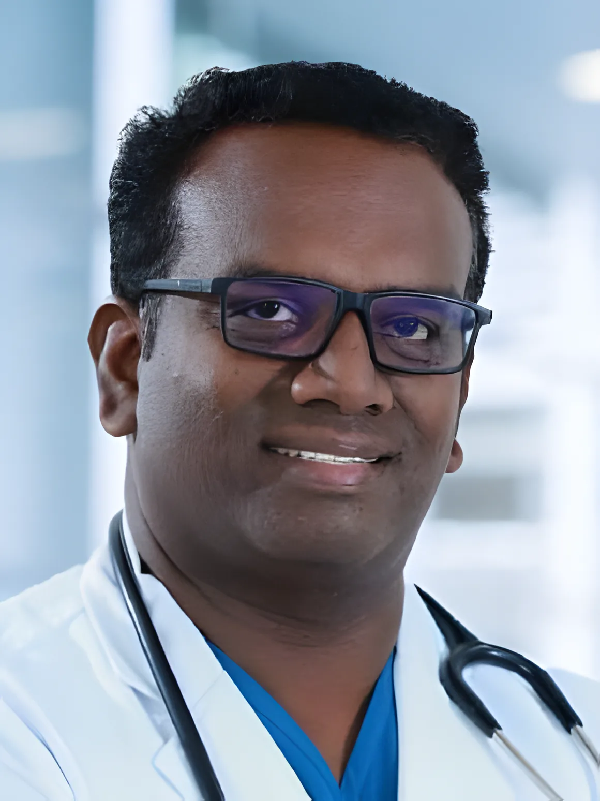
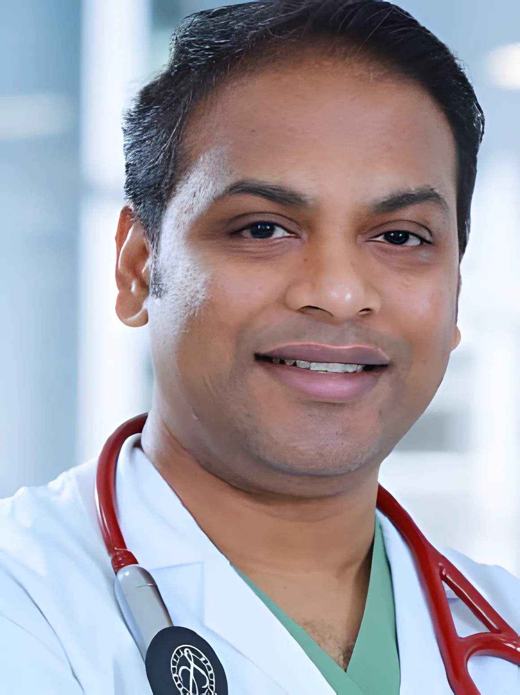
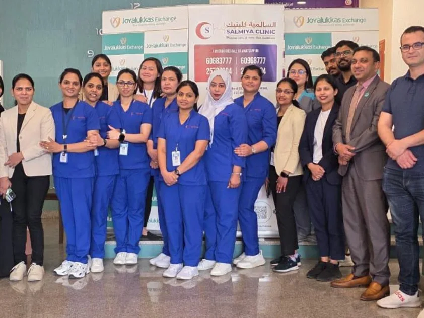

د. لطيفة الدويسان
الغدد الصماء · المديرة الطبية
مستوصف خاص في شارع بغداد. بدأ سنة 1994 كعيادة هرمونات للدكتورة لطيفة الدويسان، واليوم يضم المبنى نفسه 14 قسمًا، من النساء والولادة والأطفال والأسنان إلى مختبرنا وأشعتنا وصيدليتنا.

الهرمونات والغدة الدرقية هي البداية، وما زالت أكثر ما يعرفنا الناس فيه. اختر القسم لتعرف ماذا يعالج الطبيب فيه، واحجز برسالة واحدة. صفحات الأقسام كاملة
تشرف عليه الدكتورة لطيفة الدويسان منذ 15 أكتوبر 1994. تحاليل الهرمونات في مختبرنا المرخّص من وزارة الصحة، وسونار الغدة الدرقية والمبايض في قسم الأشعة بنفس المبنى.
احجز مع د. لطيفةجلسات فردية مع أخصائية التغذية، ونظام غذائي مبني على نتائجك وروتينك. خط التغذية المباشر: 6603 7930.
احجز موعد تغذيةرعاية للمرأة في كل الأعمار، من اضطراب الدورة عند البنات إلى سن اليأس. سونار الحمل يتم هنا في العيادة.
احجز موعد نساء وولادةطبيب الأطفال يتابع الرضّع والأطفال والمراهقين في الفحوصات الدورية وعند المرض. نقيس الصفار بجهاز على الجلد بدون سحب دم.
احجز لطفلكد. أحمد سالم السعيد (باطنية) مع د. أرون كومار ود. نيتين سيفاداس (طب عام). أول محطة لأغلب الكبار، ولباقات الفحص الشامل.
احجز مع طبيبللكبار والأطفال، مع فحص بالمنظار واختبارات السمع داخل العيادة.
احجز موعد أنف وأذنطب أسنان عام لكل العائلة، والأطفال وحالات الطوارئ.
احجز موعد أسنانعلاج الأمراض الجلدية، وغرفة ليزر وتجميل لإزالة الشعر والتصبغات وعلاجات البشرة.
احجز جلدية أو ليزرتشخيص وعلاج مشاكل المسالك البولية والصحة الإنجابية للرجال، للكبار والأطفال.
احجز موعد مسالكاطلب أي طبيب بالاسم عند الحجز. السنوات هي سنوات الخبرة.
الغدد الصماء · المديرة الطبية

أخصائية تغذية

نساء وولادة

طب الأطفال

الباطنية

أنف وأذن وحنجرة

جراحة الأسنان

طب عام

طب عام
من 1994 وكل خطوة تضيف أطباء وأقسامًا، حتى تقدر العائلة تشوف أكثر من طبيب في زيارة وحدة.
الدكتورة لطيفة الدويسان تفتح عيادتها الخاصة للغدد الصماء.
الانتقال إلى مبنى أكبر وإضافة التغذية والنساء والولادة والجلدية والتجميل.
الأسنان والمختبر والأشعة والأطفال والأنف والأذن والباطنية والمسالك.
تسعة أطباء وصيدليتنا الخاصة، من 8 الصبح إلى 9 الليل، من السبت إلى الجمعة.

تحليلك وأشعتك ووصفتك كلها في نفس المبنى اللي فيه موعدك، والنتائج توصل لطبيبك مباشرة.
أشعة رقمية، سونار، كثافة العظام، وماموغرام.
مختبر مرخّص من وزارة الصحة، من 8 صباحًا إلى 6 مساءً.
السبت–الخميس 8 ص–9:30 م · الجمعة 9 ص–9 م
التأميننقبل بطاقات الأهلية للتأمين وجلوب ميد. اسألنا عن تأمينك عند الحجز.
شارع بغداد، قطعة 9، السالمية
مقابل الأكاديمية الأمريكية الإبداعية. ص.ب 4361، السالمية 22044، الكويت.
| السبت | 8 ص – 9 م |
| الأحد | 8 ص – 9 م |
| الاثنين | 8 ص – 9 م |
| الثلاثاء | 8 ص – 9 م |
| الأربعاء | 8 ص – 9 م |
| الخميس | 8 ص – 9 م |
| الجمعة | 8 ص – 9 م |
بعض العيادات (الجلدية والليزر، المختبر) دوامها أقصر. اتصل لتتأكد من يوم طبيبك.